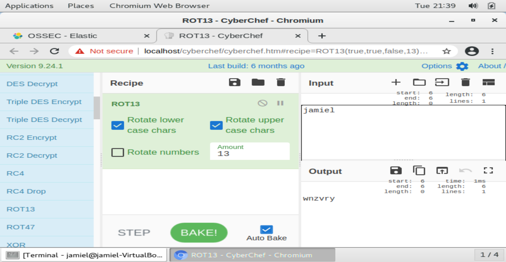
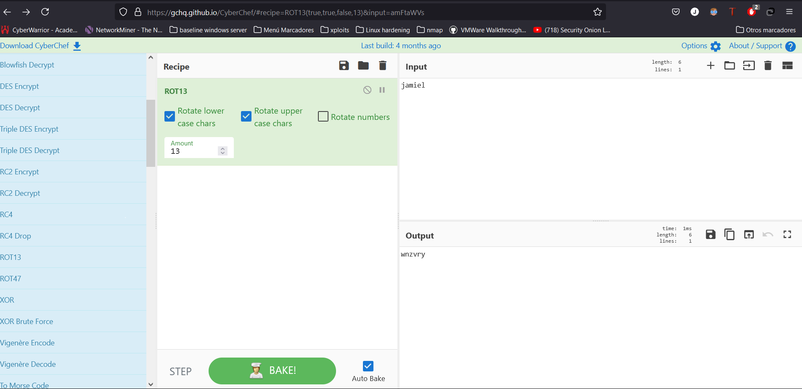
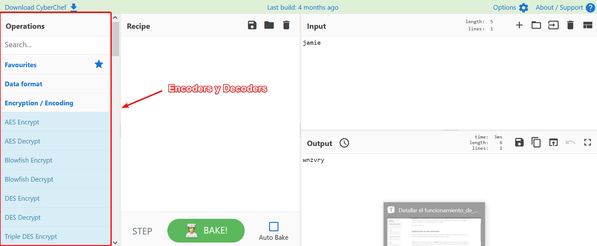
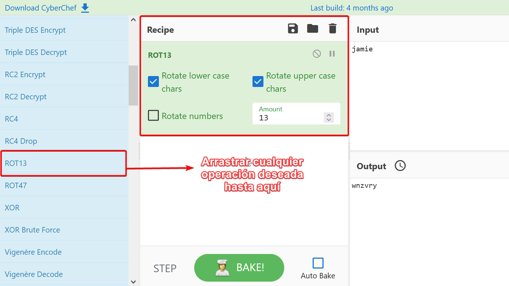
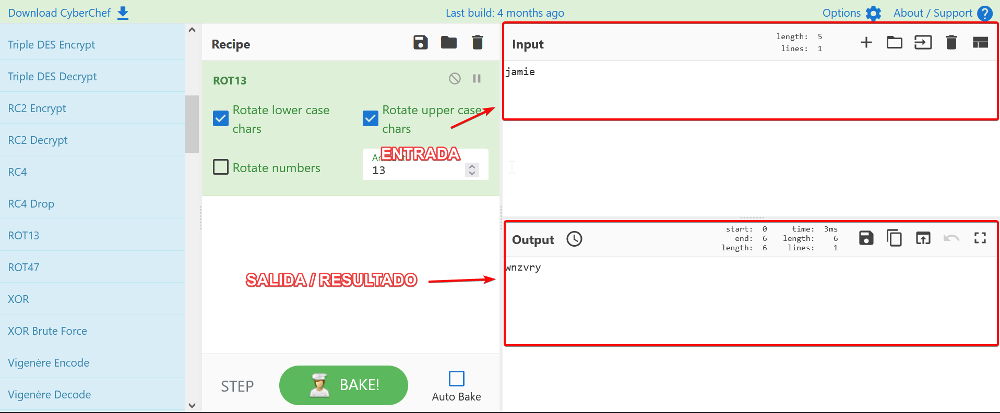

Detallar el funcionamiento de CyberChef
Qué es Cyberchef ?
Cyberchef es una herramienta que nos permite descubrir secretos, decodificar datos y, en general, buscar y encontrar información que está aparentemente oculta al ojo humano. El mundo de la tecnología en general, y de internet, en particular, está lleno de secretos.
En general
En mi opinión personal en una definición más llana simplemente es una plataforma que nos permite codificar y decodificar inputs en diferentes tipos de encriptación.
Esta es una implementación que nos viene integrada en la instalación de Security Onion, que nos permite ejecutar esto de manera local.

Ahora cabe destacar que ya como está la tecnología hoy en día, ya tenemos un cyberchef totalmente online, sin tenerlo instalado en nuestro servidor. Click aquí para ir al cyberchef online

Nos ofrece lo mismo pero sin tener nada instalado :)
Explorando la herramienta
Lo primero que encontramos cuando accedemos a la web de cyberchef en la columna izquierda son los tipos de codificadores en los que podemos codificar nuestros inputs.

Luego justo al lado tenemos la sección de Recipe que en español viene siendo receta (como ya saben la página está orienta a una especie de chef o cocina) pero es refiriendose a la sección donde arrastaremos los codificadores que queremos usar.

Las siguientes dos opciones que veremos sin simples las del INPUT Y OUTPUT, una por donde introduciremos la string a codificar o decodificar y otra por donde saldrá el resultado según lo que queramos.
